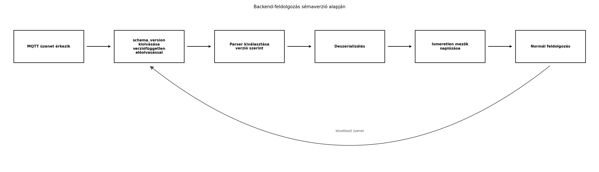

A TerraSense rendszer első változata már működik: a
ts-node eszközök MQTT-n keresztül küldik a
telemetria-adatokat, a ts-backend pedig feldolgozza és
eltárolja azokat. A fejlesztés során azonban új igény merül fel: a
csomópontok egy részén napelemes táplálást vezetünk be, ezért az
akkumulátorfeszültséget is mérni és továbbítani kell. A backendet
frissítjük, hogy kezelje az új mezőt, de a flottában több száz eszköz
van, amelyeket nem lehet egyetlen pillanat alatt OTA-frissítéssel
ellátni. Ráadásul néhány régi eszköz még hosszú hónapokig a régi
firmware-rel fut, mert a frissítési ablakuk csak később érkezik el.
Ez a mindennapos helyzet rávilágít a sémaverziózás központi problémájára: hogyan változtathatjuk meg az üzenetformátumot úgy, hogy a régi és az új komponensek (eszköz, gateway, backend) együtt tudjanak működni? Ebben az alfejezetben megtanuljuk az előre és visszafelé kompatibilitás fogalmát, a protobuf mezőszám-szabályait, valamint a verzió elhelyezésének lehetőségeit.
Definíció. Egy séma (schema) az üzenetek szerkezetének formális leírása: milyen mezők léteznek, milyen típusúak, melyek kötelezőek vagy opcionálisak, és milyen azonosítókkal (pl. JSON-kulcs, protobuf mezőszám) hivatkozunk rájuk.
Definíció. Egy sémamódosítás visszafelé kompatibilis, ha az új séma szerint működő fogyasztó a régi séma szerint előállított üzenetet is képes értelmezni. Például ha az új séma egy új, opcionális mezőt vezet be, az új fogyasztó a régi üzenet hiányzó mezőjét alapértelmezett értékkel kezeli.
Definíció. Egy sémamódosítás előre kompatibilis, ha a régi séma szerint működő fogyasztó az új séma szerint előállított üzenetet is képes értelmezni. Ez általában azt jelenti, hogy a régi fogyasztó az ismeretlen új mezőket figyelmen kívül hagyja, a régi mezőket pedig továbbra is megtalálja.
Definíció. Ismeretlen mező kezelése alatt azt értjük, hogy a deszerializáló hogyan bánik azokkal a mezőkkel, amelyeket a saját sémája nem ismer. A protobuf megőrzi ezeket a mezőket (uninterpreted data), hogy egy proxy vagy továbbító komponens ne veszítse el őket. A JSON- és CBOR-alapú feldolgozók gyakran egyszerűen eldobják az ismeretlen kulcsokat, ami adatvesztéshez vezethet, ha az üzenet több komponensen halad át.
A következő folyamatábra azt mutatja, hogy a ts-backend
hogyan dolgozza fel a bejövő MQTT-üzeneteket a sémaverzió alapján:

A folyamat lényege: az üzenetben lévő schema_version
mező alapján a backend kiválasztja a megfelelő deszerializálót. A
verziót nem a payload első bájtjából vagy első mezőjéből olvassa ki:
JSON-ban és CBOR-ban név szerint keresi az objektumban, protobufban a
tag alapján olvassa be az 1-es mezőszámot, a többi mező sorrendjétől
függetlenül. Így egy átrendezett JSON vagy eltérő mezősorrendű protobuf
üzenet ugyanahhoz a parserhez jut. Az ismeretlen mezőket (például egy
jövőbeli verzió új mezője) a tipizált DTO nem értelmezi, de a nyers
payload változatlanul megmarad (tárolva vagy továbbítva), és az
ismeretlen kulcsok nevét figyelmeztetésként naplózza, így a fejlesztők
értesülnek arról, hogy a flottában már feltűnt egy újabb verzió.
Az első fontos döntés: hová kerüljön a sémaverzió? Két elterjedt lehetőség van: a topicba vagy az üzenetbe. A TerraSense esetében a topic-konvenció már rögzített, és a gateway-nek nem szabad a topicot a sémaverzió alapján átírnia. Ezért az üzenetben hordozott verziót választjuk.
| Szempont | Verzió a topicban | Verzió az üzenetben |
|---|---|---|
| Előny | A fogyasztó már a topic alapján eldöntheti, hogyan értelmezze az üzenetet; nincs szükség a payload előzetes vizsgálatára. | A séma és az adat együtt utazik, nincs külön topic-hierarchia; a gateway nem módosítja a topicot. |
| Hátrány | A topic-struktúra bonyolultabbá válik; a feliratkozóknak több topicot kell figyelniük; a gateway-nek ismernie kell a verziót. | A fogyasztónak először ki kell csomagolnia a payloadot, hogy megtudja a verziót; a séma nélkül nem tudja deszerializálni. |
| TerraSense döntés | – | schema_version mező az üzenetben; a feldolgozó név vagy
mezőszám alapján keresi, nem a payload pozíciója alapján. |
A JSON objektumok kulcssorrendje szemantikailag jelentéktelen, a
protobuf wire-formátuma pedig a mezőket taggel azonosítja, és a mezők
sorrendjét nem garantálja. Ezért a schema_version „payload
elejére” helyezése nem működési elv, csak szerkesztési konvenció. A
feldolgozó vagy egy verziófüggetlen borítékot (például egy külön
fejlécet) olvas, vagy a teljes üzenetet beolvassa egy minimális,
verziófüggetlen parserrel, és abból emeli ki a
schema_version mezőt. A TerraSense JSON- és
CBOR-üzeneteiben a mezőt név szerint, protobufban az 1-es mezőszámmal
kell megkeresni; a bájtpozícióra építő parser hibás.
Továbbvitt eredmény. A TerraSense telemetria-sémájának verzióját az üzenetben hordozzuk, a topic nem tartalmaz verziót. A backend minden támogatott verziót fogadja, az ismeretlen mezőket nem értelmezi (a JSON/CBOR DTO figyelmen kívül hagyja, a protobuf megőrzi), de a nyers payloadot változatlanul tárolja vagy továbbítja, és az ismeretlen kulcsok nevét figyelmeztetésként naplózza. Ezt a szabályt használja az Ingest: MQTT-ből a backendbe, idempotensen, az OTA-frissítés: A/B képek, rollback, delta, fokozatos kiadás és a Flottakezelés: nyilvántartás, konfiguráció, állapot alfejezet.
A séma-nyilvántartás (schema registry) egy központi szolgáltatás, amely nyilvántartja a sémaverziókat, és a fogyasztók innen töltik be a deszerializáláshoz szükséges sémát. Előnye, hogy egyetlen helyen lehet nyomon követni a változásokat és a kompatibilitási szabályokat; hátránya, hogy újabb komponenst kell üzemeltetni, és a fogyasztó függ a registry elérhetőségétől. A TerraSense-ben a sémaverziók száma kicsi, ezért a backendbe fordításkor beágyazott parser-osztályokkal dolgozunk, és nem vezetünk be külön külső szolgáltatást. Ez a döntés a build vs. buy elvhez is illeszkedik.
A protobuf esetében a kompatibilitási szabályok a mezőszámokon alapulnak. A mezőszám 1 és 536 870 911 között lehet, de a 19 000–19 999 tartomány a protobuf implementációk számára van fenntartva. A legfontosabb szabályok:
optional kulcsszóval).A flottában vegyes firmware-verziók jelenléte elkerülhetetlen. Az OTA-frissítések fokozatos kiadása, a kihelyezett eszközök offline időszakai és a gyártási sorozatok különböző kiinduló verziói miatt mindig több szoftververzió fut párhuzamosan. Ezért a backend nem támaszkodhat arra, hogy minden eszköz azonos sémaverziót küld; ellenkezőleg, a backendnek addig kell támogatnia egy sémaverziót, amíg a legrégebbi eszköz is frissítve nem lett. Ezt a támogatási időt a flottakezelési irányelvekben rögzíteni kell.
A kanonikus v1 séma a Adatformátumok: JSON, CBOR,
Protocol Buffers, SenML alfejezetben rögzített
measurements objektumot használja. A v1 JSON-üzenet:
{
"schema_version": 1,
"node_id": "n001",
"seq": 123,
"ts": 1710000000000,
"measurements": {
"temperature": {"value": 22.5, "unit": "Cel", "valid": true},
"humidity": {"value": 60.0, "unit": "%RH", "valid": true},
"soil_moisture": {"value": 35.0, "unit": "%", "valid": true}
}
}A második verzió (v2) hozzáadja az akkumulátorfeszültséget
(battery_mv) opcionális, felső szintű mezőként, mert nem
minden csomópont rendelkezik napelemes táplálással:
{
"schema_version": 2,
"node_id": "n001",
"seq": 124,
"ts": 1710000060000,
"measurements": {
"temperature": {"value": 22.8, "unit": "Cel", "valid": true},
"humidity": {"value": 59.5, "unit": "%RH", "valid": true},
"soil_moisture": {"value": 34.0, "unit": "%", "valid": true}
},
"battery_mv": 3650
}A v1-es backend, amely csak az 1. sémaverziót ismeri, a v2-es
üzenetet is sikeresen feldolgozza, ha a JSON-feldolgozó figyelmen kívül
hagyja az ismeretlen battery_mv kulcsot. A
measurements objektum és a benne lévő
valid/reason mezők változatlanok, ezért nem
vész el érvényességi információ. Ez előre kompatibilis
változás.
A v2-es backend a v1-es üzenetet is fogadja, mert a hiányzó
battery_mv mezőt „nincs adat” állapotként kezeli. Ez
visszafelé kompatibilis változás. A két verzió között
nincs mező-átnúmerozás és nincs mező-átnevezés; a v2 csak egy új,
opcionális mezőszámot használ.
A régi, lapos JSON-formátum külön verzióhatárt kap. Az ilyen
üzenetben nincs measurements objektum, hanem
temperature_c, humidity_rh és
soil_moisture_pct mezők vannak, és a
schema_version hiányzik vagy 0:
{
"node_id": "n001",
"seq": 125,
"ts": 1710000120000,
"temperature_c": 23.0,
"humidity_rh": 58.0,
"soil_moisture_pct": 33.0
}Ezt a formátumot a backend 0-es verziójú adaptere fogadja el: a lapos
mezőkből measurements objektumot készít, a mértékegységet a
mezőnévből rögzíti (Cel, %RH, %),
a valid értékét true-ra, a reason
értékét null-ra állítja, az eredetet pedig külön
source_schema_version=0 mezőben jelöli, miközben a kimenet
schema_version értéke 1. Az 1-es és 2-es verzió kizárólag a
measurements objektumot használja; az a payload, amelyben
schema_version=1 mellett lapos mérési mező szerepel,
érvénytelen, és a dead-letter útvonalra kerül. Így egyetlen kanonikus
feldolgozási út van, a variánsok pedig explicit verziót és adaptert
kapnak.
Most nézzük ugyanezt protobuf sémával. A v1 protobuf definíció a későbbi mezőszámokat is rögzíti, hogy a bővítés ne számozza át a meglévő mezőket:
syntax = "proto3";
message Telemetry {
uint32 schema_version = 1;
string node_id = 2;
uint64 seq = 3;
int64 ts = 4;
Measurements measurements = 5;
}
message Measurements {
Measurement temperature = 1;
Measurement humidity = 2;
Measurement soil_moisture = 3;
}
message Measurement {
float value = 1;
string unit = 2;
bool valid = 3;
string reason = 4;
}A v2 protobuf definíció ugyanezt használja, és hozzáadja az
opcionális battery_mv mezőt a 6-os mezőszámmal:
syntax = "proto3";
message Telemetry {
uint32 schema_version = 1;
string node_id = 2;
uint64 seq = 3;
int64 ts = 4;
Measurements measurements = 5;
optional uint32 battery_mv = 6;
}A Measurements és Measurement üzenet
definíciója változatlan; a v2 példában csak a felső szintű
Telemetry bővül. A v1-es deszerializáló a 6-os mezőszámot
ismeretlenként kezeli, és a protobuf specifikáció szerint megőrzi azt az
ismeretlen mezők puffereben. A v2-es deszerializáló a v1-es üzenetben
egyszerűen nem találja a 6-os mezőt, és az optional
kulcsszó miatt a battery_mv mező
has_battery_mv() metódusa hamisat ad, így a fogyasztó
felismeri a hiányzó adatot.
A ts-backend Java-oldali feldolgozása a következő elvet
követi: a schema_version alapján választja ki a megfelelő
deszerializálót, és az ismeretlen mezőket nem értelmezi, de a nyers
payloadot változatlanul tárolja, a kulcsok nevét pedig
figyelmeztetésként naplózza. A cél az, hogy az újabb eszközverziók által
küldött ismeretlen mezők ne vesszenek el, és a fejlesztők időben
értesüljenek a sémabővítésről.
A sémakompatibilitást legegyszerűbben úgy ellenőrizzük, hogy a régi és az új deszerializálót is lefuttatjuk a másik verzió által előállított mintára. A tesztelés során az alábbi lépéseket érdemes követni:
battery_mv ne okozzon hibát.schema_version
kiolvasása és a deszerializálás eredménye ugyanaz. A parser nem
támaszkodhat a schema_version pozíciójára.| Hibatünet | Lehetséges ok | Javítás |
|---|---|---|
| A backend elutasítja az üzenetet „unknown field” hibával. | A JSON-deszerializáló szigorú konfigurációja nem engedi az ismeretlen mezőket. | Kapcsoljuk be a lenient módot, vagy vezessünk be explicit mezőszűrést a séma alapján. |
A v1-es eszköz üzenete a v2-es backendben hibát okoz, mert hiányzik
a battery_mv. |
Az új mezőt kötelezőként kezeltük, nem opcionálisként. | Tegyük opcionálissá a mezőt, vagy adjunk neki alapértelmezett értéket. |
| Protobufban az ismeretlen mezők elvesznek, pedig a gateway továbbítja őket. | A gateway újra-serializálja az üzenetet, de nem őrzi meg az ismeretlen mezőket. | Használjunk olyan protobuf API-t, amely megőrzi az ismeretlen
mezőket (pl. Java-ban UnknownFieldSet). |
| A topic-verzió nem frissül, amikor az eszköz új sémára vált. | A gateway a bejövő UDP csomag alapján generálja a topicot, de nem olvassa a sémaverziót. | Az üzenetben hordozott verziót választottuk, ezért a topic nem változik; a gateway-nek nincs feladata. |
Mezőszám újrahasznosítása protobufban. A fejlesztők néha törölnek egy mezőt, majd később ugyanazt a mezőszámot adják egy másik mezőhöz. Ez súlyos adatkárosodást okozhat, mert a régi üzenetekben az adott mezőszám más jelentéssel bír, és a feldolgozó rossz típussal értelmezi. A mezőszámot soha nem hasznosítjuk újra, még akkor sem, ha a mező törlésre került.
Ismeretlen mezők eldobása proxy esetén. Ha a rendszerben egy köztes komponens (például a ts-gw) újra-serializálja az üzenetet, és a JSON/CBOR feldolgozó eldobja az ismeretlen mezőket, az adatok elvesznek. A gateway ezért csak akkor alakíthatja át a payloadot, ha garantálni tudja a mezők megőrzését, vagy ha a backend számára felesleges mezőket szándékosan szűri.
Kötelező mező hozzáadása visszafelé kompatibilisnek gondolása. Sokan azt hiszik, hogy ha a régi fogyasztó el tudja olvasni az új üzenetet (vagyis a változás előre kompatibilis), akkor a változás automatikusan kompatibilis is. Valójában a visszafelé kompatibilitás azt követeli meg, hogy az új fogyasztó a régi üzenetet is értse. Kötelező mező hozzáadása ezt megsérti, mert a régi üzenetben nincs jelen.
Sémaverzió nélküli JSON-mezők. Ha az üzenetben
nincs explicit verziószám, a fogyasztó csak heurisztikával (pl. mező
jelenléte) tudja eldönteni a verziót. Ez törékeny és hibákhoz vezet. A
kanonikus üzenetekben mindig szerepeljen schema_version; a
régi, lapos formátum csak a 0-es verziójú adapter bemenete lehet, és az
adapter után a tárolt payload már explicit verziót hordoz.
Fogalmi/döntési kérdés. Döntse el az alábbi sémamódosításokról, hogy visszafelé, előre vagy egyik irányban sem kompatibilisek. Indokolja válaszát.
device_type mezőt a
telemetria-üzenethez.measurements.humidity bejegyzést, mert a
szenzor már nem méri.measurements.temperature kulcsot
temp-re.battery_mv mezőt a 6-os
mezőszámmal protobufban.Számolási/tervezési feladat. A TerraSense v1
telemetria-üzenet öt felső szintű mezőt tartalmaz. Becsülje meg, hogy az
opcionális battery_mv mező hozzáadása mennyivel növeli a
JSON- és a protobuf-üzenet méretét, ha az akkumulátorfeszültség
tipikusan 3 600 mV. A JSON-ban a mezőnév
"battery_mv": 3650, hossza hány bájt? A protobufban a mező
fejléce (tag) és a varint érték hány bájt? (A protobuf uint32 mező tagje
1 bájt, ha a mezőszám kisebb 16-nál; a varint 3 650 értékhez 2 bájt
szükséges.)
Implementációs feladat. Terjessze ki a
TerraSense telemetria-sémáját egy új opcionális mezővel,
rssi_dbm (sint32) a 7-es mezőszámmal protobufban. Írja meg
a v3-as protobuf definíciót, és mutassa be, hogyan deszerializálja a
v2-es backend ezt az üzenetet (a hiányzó rssi_dbm
kezelése).
Hibakeresési/kiterjesztési feladat. A
ts-backend naplójában a következő hiba jelenik meg:
Unrecognized field "battery_mv" (class TelemetryV1), not marked as ignorable.
Mi a hiba oka, és hogyan javítható anélkül, hogy a v1-es parser sémáját
módosítanánk?
Kompatibilitási döntések.
device_type-ot, és
elutasítja. Előre kompatibilis: a régi fogyasztó az új
üzenet ismeretlen device_type mezőjét figyelmen kívül
hagyja.humidity bejegyzését ismeretlenként figyelmen kívül
hagyja. Nem előre kompatibilis, ha a régi fogyasztó a
humidity-t elvárja: az új üzenetből hiányzik. (Ha a régi
fogyasztónál a humidity opcionális, mindkét irányban
kompatibilis, de adat vész el.)Méretnövekedés.
"battery_mv": 14 bájt, az érték
3650 4 bájt, a vessző 1 bájt, összesen 19 bájt. A teljes
JSON növekedése tehát 19 bájt (a szám pontos hossza a formázástól
függ).0x30), a varint 3 650 értéke 2 bájt, összesen 3 bájt. A
protobuf tehát jelentősen kisebb növekedést okoz.Protobuf v3 séma.
syntax = "proto3";
message Telemetry {
uint32 schema_version = 1;
string node_id = 2;
uint64 seq = 3;
int64 ts = 4;
Measurements measurements = 5;
optional uint32 battery_mv = 6;
optional sint32 rssi_dbm = 7;
}A Measurements és Measurement üzenet
definíciója változatlan. A v2-es backend deszerializálja a v3-as
üzenetet: a 7-es mezőszámot ismeretlenként kezeli, és megőrzi az
ismeretlen mezők pufferében. A v2-es sémában nincs
rssi_dbm, így a fogyasztó nem fér hozzá, de az üzenet többi
része hibátlanul feldolgozható.
Hiba oka és javítása. A hiba azt jelzi, hogy a
v1-es Java deszerializáló (Jackson) szigorú módban fut, és az ismeretlen
battery_mv kulcsot nem engedi figyelmen kívül hagyni. A
javítás: állítsuk be a Jackson ObjectMapper-en a
FAIL_ON_UNKNOWN_PROPERTIES értéket false-ra,
vagy a @JsonIgnoreProperties(ignoreUnknown = true)
annotációt használjuk a v1-es DTO osztályon. Ezzel a v1-es parser el
tudja fogadni a v2-es üzenetet, és az ismeretlen mezőt a DTO-ba nem
olvassa be. Hogy a szabály szerint a kulcs neve ne vesszen el csendben,
naplózzuk: a DTO-n
@JsonAnySetter void unknown(String k, Object v) { log.warn("unknown field {}", k); },
vagy DeserializationProblemHandler.handleUnknownProperty
(amely true-val jelzi a kezelést). A nyers payload ettől
függetlenül változatlanul tárolódik.
A sémaváltozások kompatibilitását két irányban vizsgáljuk: visszafelé
(az új fogyasztó a régi üzenetet is érti) és előre (a régi fogyasztó az
új üzenetet is érti). Az ismeretlen mezők kezelése kulcsfontosságú: a
protobuf megőrzi, a JSON/CBOR gyakran eldobja azokat, ezért proxy esetén
figyelni kell. A TerraSense-ben a sémaverziót az üzenetben hordozzuk
(schema_version mező), a topic nem tartalmaz verziót. A
kanonikus v1 üzenet measurements objektumot használ; a
korábbi lapos JSON-formátumot a backend 0-es verziójú adapterrel fogadja
el. A sémaverziót a feldolgozó név vagy mezőszám alapján keresi, nem a
payload pozíciója alapján. A protobuf mezőszámokat soha nem hasznosítjuk
újra, az új mezőket opcionálisan vesszük fel. A backend minden
támogatott verziót fogad, az ismeretlen mezőket naplózza. Ezt a szabályt
használja az Ingest: MQTT-ből a backendbe,
idempotensen, az OTA-frissítés: A/B képek,
rollback, delta, fokozatos kiadás és a Flottakezelés: nyilvántartás, konfiguráció, állapot
alfejezet.
A protobuf mezőszám-szabályai és az ismeretlen mezők megőrzése a Protocol Buffers hivatalos dokumentációjában (https://protobuf.dev/programming-guides/proto3/) találhatók. A JSON- és CBOR-ismeretlen mezők kezelése az RFC 8949 (CBOR) és az általános JSON-gyakorlat szerint történik. A séma-nyilvántartás fogalma a Confluent Schema Registry dokumentációjában (https://docs.confluent.io/platform/current/schema-registry/) érhető el; a TerraSense-ben nem vezettünk be ilyen szolgáltatást. A fenti URL-ek kiindulópontok, az ellenőrzés a megírás időpontjában nem történt meg.